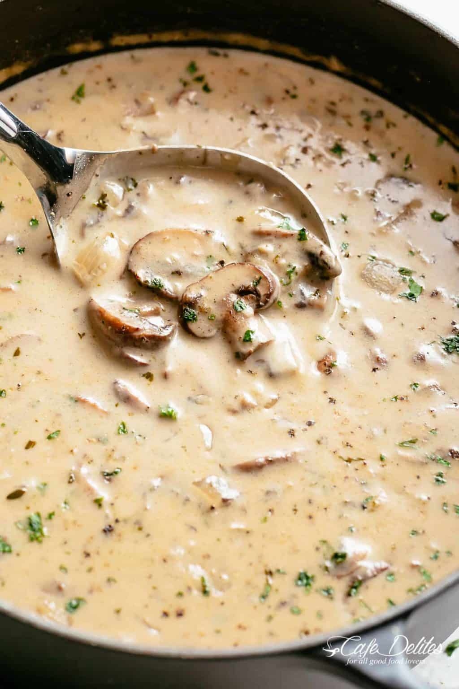
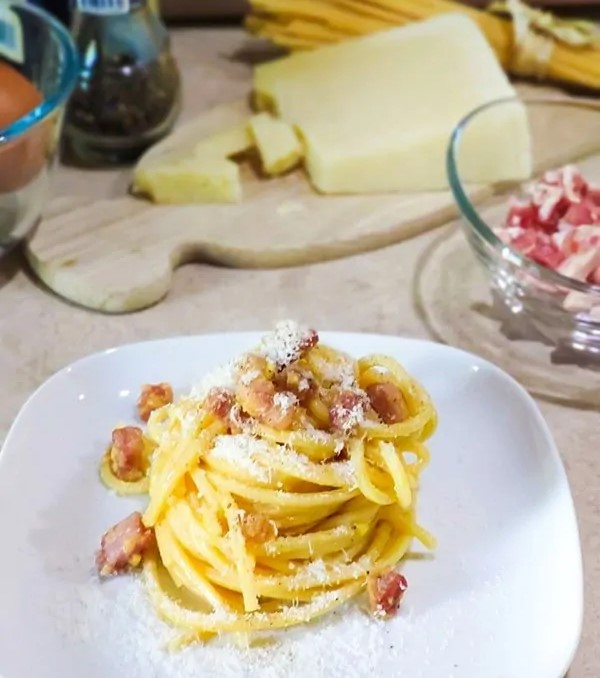

Cream of Mushroom Soup |
Spaghetti Carbonara |
|---|---|
|  |  |
| For this cream of mushroom soup you can use common button mushrooms, or add other delicious varieties. Experiment and have fun, all will be good. | Spaghetti Carbonara, one of the most famous Pasta Recipes, is made with only 5 ingredients: spaghetti seasoned with browned guanciale, black pepper, pecorino Romano and beaten eggs. |